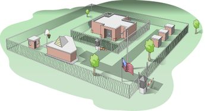
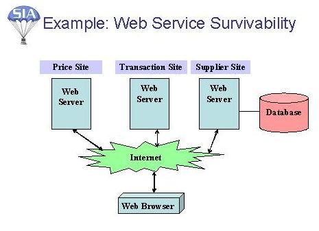

Copyright © This course contains materials from "Survivability and Information Assurance" (copyright 2005 Carnegie Mellon University) with special permission of the Software Engineering Institute at Carnegie Mellon University.
- Table of Contents
- 1. Principle 1: Survivability Is an Enterprise-Wide Concern
- 2. Reading Assignments
- 3. 1: Survivability is an enterprise-wide concern
- 4. Learning Outcomes
- 5. Topics
- 6. Topics
- 7. Survivability Defined
- 8. Security vs. Survivability
- 9. The Layered Approach to Security
- 10. The Layered Approach to Survivability (cont'd)
- 11. Unbounded Systems
- 12. Internet Trends Affecting Survivability
- 13. Attack Sophistication vs. Intruder Technical Knowledge
- 14. Characteristics of Survivable Systems
- 15. Topics
- 16. Anticipates Failures and Intrusions
- 17. Protecting Information Assets
- 18. Topics
- 19. Example: Web Service Survivability
- 20. Summary
- 21. EXAM
1. Principle 1: Survivability Is an Enterprise-Wide Concern

This module provides a fundamental understanding of the concepts of survivability. It includes the differences between security and survivability, a clear understanding of mission survivability, and the methods and techniques that can be implemented to make information systems survivable within an organization.
This module should take 2 hours, including Guided Tours and Exercises.
The required reading must be done in advance of this class and students may be quizzed on the materials.

2. Reading Assignments
Required readings:
1. Survivability: Protecting Your Critical Systems, [Ellison 99].
1. 2. Survivability.a New Technical and Business Perspective on Security, [Lipson 99].
Recommended readings:
None
Survivability is the first key principle of information assurance. It is intended to permeate all levels of an organization, from the leadership that sets corporate direction, through middle management that approves requests for capital and time needed for other levels to achieve survivability, to programming that practices survivability, and systems administration that recommends and installs technology in support of survivability. It is important to know about survivability and how to engineer it into existing and new functional units.
Survivability is much more real-time oriented than, for example, disaster recovery, in which a functional unit's constituency knows about disasters and what to expect when they occur. In contrast, intrusions and outages related to failures are typically unexpected. Organizations that do not anticipate them and plan accordingly can be adversely affected by their constituency's reactions to such an outage.
3. 1: Survivability is an enterprise-wide concern

This module introduces survivability of network computer systems as an enterprise-wide concern. The survivability of a system of networked computers reflects on the survivability of their mission within an enterprise, and the survivability of essential missions may actually affect the survivability of the entire enterprise. Mission survivability of network computer systems is the key and will be the focus of this principle.
Students should become familiar with the following important terms as defined in Telecom Glossary [ANST]:
Information systems security (INFOSEC and/or ISS): [The] protection of information systems against unauthorized access to or modification of information, whether in storage, processing or transit, and against the denial of service to authorized users, including those measures necessary to detect, document, and counter such threats.
Information assurance: Information operations (IO) that protect and defend information and information systems (IS) by ensuring their availability, integrity, authentication, confidentiality, and non-repudiation. This includes providing for restoration of information systems by incorporating protection, detection, and reaction capabilities.
4. Learning Outcomes
| Survivability and its goals with respect to an enterprise's mission |
| How specific computer systems support the mission |
| Information needed to determine the survivability of an entity |
| How to improve mission survivability |
After completing this module, you will be able to describe and apply these survivability concepts.
5. Topics
Survivability
Disruptions and unauthorized modification of data
Actions that can occur
Strategies to mitigate these actions
Survivability example and summary
These are the topics that will be covered in this module.
This is an introductory module presenting the basic goals of the SIA Curriculum and the principles to be covered in this course. It is intended to set the stage and define the intended audience.
6. Topics
Survivability
Disruptions and unauthorized modification of data
Actions that can occur
Strategies to mitigate these actions
Survivability example and summary
7. Survivability Defined
|
|
System: networks and large-scale "systems of systems" Mission: meeting established high-level requirements/goals Critical: critical factor specified or implied by mission requirements |

Survivability - The capability of a system to fulfill its mission, in a timely manner, in the presence of attacks, failures, or accidents
Survivability
In recent years, there have been dramatic changes in the character of security problems, in their technical and business contexts, and in the goals and purposes of their stakeholders. As a consequence, many of the assumptions underlying traditional security technologies are no longer valid. Failure to recognize the depth and breadth of these changes prevents effective solutions to modern security problems.
Examining survivability allows us to look at security with a new technical and business perspective, which is essential to our search for solutions. Moreover, a survivability approach expands the view of security from a narrow technical specialty practiced by experts to a risk-management issue requiring the participation of an entire organization (executive management, security experts, application domain experts, and other stakeholders) to protect mission-critical systems from cyber attacks, failures, and accidents.
Survivability requires a systematic approach to assure that systems operating in an unbounded network are robust in the presence of attacks and able to survive intrusions. This approach is described further in Survivability: Protecting Your Critical Systems [Ellison 99]:
The term "system" is used in the broadest possible sense, to include networks and large-scale systems of systems. In particular, the focus of survivability is on unbounded networked systems where traditional security precautions are inadequate. The term "mission" refers to a set of very high-level (i.e., abstract) requirements or goals. Judgments as to whether or not a mission has been fulfilled are typically made in the context of external conditions that may affect the achievement of the mission's goals. Timeliness is a critical factor that is typically included in (or implied by) the very high-level requirements that define a mission. However, timeliness is such an important factor that it is included explicitly in the definition of survivability.
|
|
Attacks: orchestrated by an intelligent adversary Failures: deficiencies in elements on which the system depends Accidents: randomly occurring events |
The following excerpts from Survivability: Protecting Your Critical Systems [Ellison 99] expand on the impact of attacks, failures, and accidents:
"The mere threat of an attack can have as severe an impact on a system as an actual occurrence. A system that assumes an overly defensive position because of the threat of an attack may significantly reduce its functionality and divert excessive resources to monitoring the environment and protecting system assets."
"With respect to system survivability, a distinction between an attack and a failure or accident is less important than the impact of the event. Our survivability approach concentrates on the effect of a potentially damaging event. Typically, for a system to survive, it must react to (and recover from) a damaging effect (e.g., the integrity of a database is compromised) long before the underlying cause is identified. In fact, the reaction and recovery must be successful whether or not the cause is ever determined."
Survivability concentrates on recovery from a damaging effort, not the cause. Mission fulfillment must survive not a particular sub-system or component.
Table 1. Review
Test Your Understanding: |
|---|
|
Given this definition, identify a non-computer example of an enterprise with respect to survivability. Address the following with respect to your example:
|
8. Security vs. Survivability
Security
| Survivability |
|---|---|
|
Focus on protecting information |
Focus on continuity of operations |
|
Systems are seen as bounded and under central administrative control |
Systems are seen as open, unbounded, with distributed administrative control |
|
Considered an overhead expense |
Considered an investment; essential to the business of the organization |
|
Narrow technical specialty with technology- based solutions |
Part of enterprise risk management; business driven, management-based solutions |
|
Protect system components |
No component immune; ensure mission sustained |

Security versus Survivability
Survivability is an emerging discipline that blends computer security with business risk management for the purpose of protecting highly distributed information services and assets. A fundamental assumption is that no system is totally immune to attacks, accidents, or failures. Therefore, the focus of this new discipline is not only to thwart computer intruders, but also to ensure the sustainment of mission-critical functions and the delivery of an essential set of services despite cyber-attacks. The "essential set of services" will depend on specific individual situations. Improving survivability in the presence of cyber-attacks also improves the capacity to survive accidents and system failures that are not malicious in nature.
Traditional computer security is a highly specialized discipline that seeks to thwart intruders through technical means that are largely independent of the application or system being protected. Firewalls, cryptography, access control, authentication, and other mechanisms used in computer security are meant to protect in much the same way, regardless of the specific application being protected. In contrast, survivability has a very sharp mission focus and is more akin to risk management.
Ultimately, it is the mission that must survive and not any particular component of the system or even the system itself. The mission must go on even if an attack causes significant damage or destruction of the system that supports the mission. The shift toward risk management, an approach that is highly intertwined with the mission-specific features of the application being protected is the most radical paradigm shift that is occurring as the new discipline of information survivability continues to emerge.
Survivability solutions are best understood as risk management strategies that first depend on an intimate knowledge of the mission being protected. The mission focus expands survivability solutions beyond purely independent ("one size fits all") technical solutions, even if those solutions are broad-based and extend beyond traditional computer security to include fault tolerance, reliability, usability, and so forth [Lipson 99].
Security as a component of survivability

The postal analogy
The U.S. Postal Service's system of receiving, transporting, and delivering mail has several survivability components.
Mission | Security Components | Other Key Components |
|---|---|---|
|
Timely delivery of mail |
|
Automation - Bar codes, optical scanners, web-tracking, computerized parsing, etc. Fault Tolerance - Alternate flights/hubs, substitute letter-carriers, inter-post office communication Management - Extensive training program, personnel accountability, infusion of pride, etc. Design - Zip code system, levels of service, hub and spoke "topology", etc. |
The U.S. Postal Service (USPS) mail delivery system is analogous to large-scale, complex information technology (IT) systems and data networks. In this case, we are attempting to accomplish the mission of delivering mail in a timely manner. There are many risks associated with this: loss/theft of mail, slow transport and delivery, etc. The USPS applies numerous solutions as synergistic survivability components:
Security - Security is critical to sustaining the mission in this analogy. Physical security is implemented by having locked mailboxes and cargo containers on commercial flights as well as secure sorting and storage rooms in post offices that are inaccessible to the general public. Personnel security is implemented by having cameras in post office sorting rooms and by conducting announced and unannounced inspections of post office operations. Organizational security is implemented by enforcing extensive policies and procedures on how mail is to be securely handled. Federal laws support security measures and deter violators by inflicting stiff consequences for non-compliance.
Automation - Automation sustains the mission by streamlining operations and reducing the chance of human error. Bar codes and high-speed optical scanning are implemented at all regional hubs (and many post offices as well) and improve the accuracy and efficiency of routing mail. This system has been modernized continually and now has direct connectivity to the USPS Web site, enabling customers to track mail online. While technology provides great benefit to the mission of the USPS, it cannot solve all problems or mitigate all risks or potential failures. Again, this component is part of a larger survivability construct.
Fault tolerance - Fault tolerance attempts to eliminate single points of failure and can also provide a degree of redundancy and fail-over in the system. If a fully loaded plane cannot fly due to mechanical problems, the system can accommodate this by using another plane, carrier, or means of transport. If your postman is sick, you'll still receive your mail that day. If your letter arrives at the wrong community post office, USPS personnel will re-route it to the correct one.
Management structure - Management structure in the USPS ensures that all members are properly trained. It has mature rating and evaluation programs and corrective measures that effectively provide for personnel accountability. It has also had great success instilling pride in its employees; they don't want to lose letters because it hurts the reputation of the USPS as an organization and also hurts their customers. Maintaining and nurturing tradition has helped to ensure a motivated workforce.
Design - The design of the system is essential to its success. Zip codes make routing and transport logical (much the same way as IP routing does) and they allow for scalability. There are many levels of service customers can choose. If speed is important, they can choose overnight express mail, although it comes at a cost. If guaranteed delivery is critical, then a patron can choose registered mail, which operates on an unbroken chain of receipts and constant physical security. It is so trustworthy that the U.S. military routinely sends classified documents (up to Secret) via registered mail. Customers can even pay an extra 50 cents and track their packages via the Internet. The mail system operates in a logical hub-and-spoke topology. When you mail a letter across the country, it goes first to your local hub (your community post office) and then is routed to a regional hub. From the regional hub, it is transported to the destination regional hub. The letter is then sent to the destination community post office and finally out to the spoke, the addressee's specific location. This topology has checks built into the system at all stages of transport and allows for reliable, fast, efficient, and inexpensive service.
All of these survivability components are synergistic, working together to sustain the mission. IT systems and data networks have many of the same characteristics, problems, and challenges. Security is a crucial part of maintaining a survivable system, but it will not be effective in the absence of other symbiotic solutions. Implementing survivability components based on prudent risk management conclusions can help achieve and sustain the mission of the organization.
9. The Layered Approach to Security
Applying synergistic solutions in an attempt to accomplish the mission and mitigate potential failures
Mission | Layers of Survivability | |
|---|---|---|
|
Safely Transport Passengers |
|
|
The Layered Approach to Survivability
The following analogies illustrate the concept of survivability.
Analogy 1: Driving
Applying multiple survivability measures (airbags, seat belts, bumpers, etc.) increases the likelihood of accomplishing the mission (safe transportation of passengers), while reducing the chance of failure. These measures are applied as a holistic system, not numerous, stand-alone pieces. For example, the airbags in a car work in conjunction with the seatbelt system. If passengers are not wearing their seatbelts and are in a serious accident, it is unlikely that they will escape uninjured solely as a result of the airbags deploying.
Analogy 2: The Village Farmer
Consider a village farmer with the mission of supplying food to a village. The farmer may have a fence around the crops to keep out deer, rabbits, and other intruders (traditional security). The farmer may have an irrigation system to be used in the event of insufficient rainfall (redundancy). He or she may plant a variety of crops so that even if environmental conditions (e.g., pests) adversely affect one crop, others will survive (diversity). All of this is well and good. But even if all the crops fail and no food is grown, the mission can still succeed if the farmer has an alternate strategy based on the mission of providing food - not necessarily growing food using the local ecosystem. If the crops fail, the farmer may turn to hunting or fishing to provide the life-sustaining mission fulfillment that fellow villagers depend upon. Is hunting a security, reliability, or fault tolerance strategy? None, because it is outside the system for growing food. This is a risk management strategy that can be formulated only with an intimate understanding of the mission that must survive. Detailed technical expertise on fence-building or even agriculture is helpful but inadequate compared to strategies based on an intimate knowledge of the mission requirements [Lipson 99].
10. The Layered Approach to Survivability (cont'd)
Starts with and is defined by risk management
The military base analogy:
MISSION
Secure Military Base Facilities
LAYERS OF SURVIVABILITY
Base Gymnasium:
Barbed wire/fence around base perimeter
Only 1 entrance where armed MP checks everyone's ID card
Locks on doors and window
Headquarters Layers:
Barbed wire/fence around base perimeter
Only 1 entrance to base where armed MP checks everyone's ID card
Internal perimeter electrified fence around headquarters
MPs at internal gate checking special headquarters-only pass and ID
Biometric scan for entry into reinforced door
Comprehensive security policies and strict enforcement
Quarterly security awareness training to headquarters staff
Backup generators, water and food reserves
Bomb, fire, biological and chemical-resistant facility

The Layered Approach to Survivability
Analogy 3: Secure Military Base Facilities
An analogy of secure military base facilities focuses on risk management and its importance to survivability. Before you can apply appropriate survivability measures to an asset, you must evaluate its importance to the mission of the organization, and then identify risks associated with that asset. After the risks have been articulated, risk management decisions are made and appropriate survivability measures (safeguards) may be set in place.
In this analogy, the base gymnasium is of less importance to the overall mission of the military organization on the base. Because of this, relatively few survivability measures have been applied to mitigate the risk of intrusion.
In contrast, the headquarters is considered to be the most vital building on the military base. It is central to all operations in both peacetime and war. Because the risks associated with it are much higher and more varied, many layers of survivability measures have been applied to it. Additionally, because the complexity of these measures is far greater than the complexity of the measures for the gym, the overall investment for the headquarters is greater.
An organization's public Web server will likely be more important to its mission than an individual employee's desktop workstation. As a result, greater efforts will likely be made to ensure the survivability of the Web server's mission.
11. Unbounded Systems
Unbounded Systems | |
|---|---|
|
|
|

Unbounded Systems
Many enterprise network systems are no longer "bounded" (i.e., a centrally networked environment, under organizational control, and full visibility to systems that are in a globally networked environment). Such stand-alone mainframe or corporate environments that were once physically isolated have evolved into distributed client server networks connected to the Internet with peer-to-peer services and networking. It is no longer the case that access is permitted only within the physical facilities that house the network: remote access is now a given.
Instead, enterprise network systems are "unbounded" (i.e., well-defined geographic, political, cultural, and legal or jurisdictional boundaries to systems characterized by the absence of these boundaries). Systems under centralized administrative control with trustworthy, known, inside users have evolved to systems with distributed administrative control, no central authority, and unknown users. These networked systems are interdependent instead of insular and fortress-like, with less distinction between system insiders and outsiders. Formerly well-defined outsider roles no longer fit customers, collaborators, partners, contractors, or vendors who have access to the network based on these roles.
System administrators of unbounded systems are often faced with the following issues [Allen 02]:
Do strategic and tactical security decisions concerning networks that are connected to the Internet recognize that there are no well-defined geographical, political, and technological boundaries?
Is there an active contact list of other system administrators for the primary networks that connect with our enterprise's network?
Are system administrators up to date on the latest threats, attacks, and solutions?
Are system and network configurations up to date with the latest patches?
Another effect on system administrators that is derived from unbounded systems is the shift from single responsibility to shared organizational responsibility to distributed responsibility. This is a shift from having a single point of known responsibility to correct failures to having shared, sometimes unknown, responsibility. In other words, going from "I know who to contact when I have a problem and I can describe the problem" to a situation better described as "I cannot precisely identify what or where the problem is and I may not know who to contact if it occurs outside of my organization's administrative control". System administrators of unbounded systems are often faced with the following issues [Allen 02]:
Do all authorized users know whom to contact when they detect suspicious, unexpected, or unusual behavior?
Do the recipients of this information know how to process each request, dealing with highest priority requests first, and who to contact for further assistance?
12. Internet Trends Affecting Survivability
Increase in intrusions
Vulnerabilities reported
Hosts attached to the Internet
Attack sophistication
13. Attack Sophistication vs. Intruder Technical Knowledge

The level of knowledge required by intruders is getting steadily lower, yet their ability to perpetrate sophisticated attacks against the survivability of systems has increased.
Contributing factors include:
Explosion of computer and Internet availability
Increase in broadband availability in residential areas
Low priority of security for software developers
Difficulty patching vulnerabilities on all systems
Graphical user interface (GUI) based tools that exploit known software vulnerabilities
Availability of "malware" (malicious software) authoring/editing tools
Introduction of tools that attempt to exploit multiple vulnerabilities (i.e., Nimda)
14. Characteristics of Survivable Systems
Essential services: functions of the system that must be maintained in the presence of attacks, failures, and accidents
Specified minimum levels of integrity, confidentiality, performance must be maintained
Can include alternate sets of essential services that are not simultaneously available
Cannot be dependent on survival of a specific resource
Key properties of survivable systems
Resistance to attacks
Recognition of attacks and the extent of the damage
Recovery of full and essential services after an attack
Adaptation and evolution to reduce effectiveness of future attacks
The following are important excerpts from Survivability: Protecting Your Critical Systems [Ellison 99] regarding characteristics of survivable systems:
"As noted essential services are defined as the functions of the system that must be maintained when the environment is hostile, or when failures or accidents occur that threaten the system.
Central to the delivery of essential services is the capability of a system to maintain essential properties (i.e., specified levels of integrity, confidentiality, performance, and other quality attributes). Thus, it is important to define minimum levels of quality attributes that must be associated with essential services.
The capability to deliver essential services (and maintain the associated essential properties) must be sustained even if a significant portion of the system is incapacitated. Furthermore, this capability should not be dependent upon the survival of a specific information resource, computation, or communication link. A survivable financial system is one that maintains the integrity, confidentiality, and availability of essential information and financial services, even if particular nodes or communication links are incapacitated because of an intrusion or accident, and that recovers compromised information and services in a timely manner. The financial system's survivability might be judged by using a composite measure of the disruption of the stock trades or bank transactions (i.e., a measure of the disruption of essential services).
Ultimately, mission fulfillment must survive, not any portion or component of the system. In some cases if an essential service is lost, it can be replaced by another service that supports the mission fulfillment in a different but equivalent way. As a result, we define essential services to include alternate sets of essential services (perhaps mutually exclusive) that need not be simultaneously available. For example, a set of essential services to support power delivery may include both the distribution of electricity and the operation of a natural gas pipeline."
To maintain an enterprise's capabilities to deliver essential services, their survivable systems must exhibit the following four key properties indicated in Survivability: Protecting Your Critical Systems [Ellison 99]:
Resistance to attacks (i.e., strategies for repelling attacks)
Recognition of attacks and the extent of their damage (i.e., strategies for detecting attacks and intrusions, understanding the current state of the system, evaluating the extent of the damage)
Recovery of full and essential services after attack (i.e., strategies for restoring compromised information or functionality, limiting the extent of the damage, restoring essential services with the time constraints of the mission)
Adaptation and evolution to reduce the effectiveness of future attacks (i.e., strategies for improving system survivability based on knowledge gained from intrusions)
15. Topics
Survivability
Disruptions and unauthorized modification of data
Actions that can occur
Strategies to mitigate these actions
Survivability example and summary
16. Anticipates Failures and Intrusions
You won't necessarily have warning - plan for the worst:
Natural disasters, terrorism, hackers, equipment failure, human-error, disgruntled employees, etc.
Evaluate and prioritize assets
Identify risks
Apply appropriate protection strategies
Many enterprises have contingency plans for dealing with business interruptions caused by natural disasters or accidents. Although the majority of cyber attacks are relatively minor in nature, a cyber attack on an organization's critical networked information systems has the potential to cause severe and prolonged business disruption, whether the business has been targeted specifically or is a random victim of a broad-based attack. If a cyber attack disrupts critical business functions and interrupts the essential services that customers depend upon, then the survival of the enterprise itself is at risk. (Principle 3: Not all data is of equal value to the enterprise - risk must be managed)

An example would be the Web services offered by major banks. If a bank's home page were to be defaced as part of a cyber attack, it would very likely decrease the confidence that patrons have in the bank's ability to safeguard their money. These patrons may decide to move their money elsewhere. Therefore, relatively benign attacks (from an operational stand-point) can cause significant damage to the overall business survivability of an organization.
One significant difference between disruptions caused by natural disasters and those caused by cyber attacks (besides the notion of an intelligent adversary behind a cyber attack) is that with a natural disaster there is a customer expectation of diminished service. A business disruption caused by a cyber attack will likely be seen by an enterprise's customers as a sign of incompetence. Unless the cyber attack is widespread and well publicized, no customer sympathy will be forthcoming [Lipson 99].
It is essential that survivability be treated holistically when managing IT systems and information assets. Sustaining the mission of the organization is, after all, the primary motivation for investing in survivability components in the first place - not just protecting systems from intruders.
17. Protecting Information Assets
A comprehensive approach to implementing and sustaining information security can include the following strategies and practices:
Avoidance
A desirable strategy for improving security is to avoid configurations that present unnecessary opportunities for problems to occur. For example, if users of systems on a particular network do not require direct access to external networks, and inbound connections are forbidden, then there is no reason to connect the network to external networks in the first place.
Prevention
Prevention refers to the implementation of measures and controls to minimize the possibility of security problems occurring. For example, it may be necessary to store different kinds of data on a common file server. To prevent unauthorized access to each kind of data, access controls should allow users to see only those kinds of data they have permission to see.
Detection
Despite all efforts to prevent unauthorized access to information assets and resources, security incidents are bound to occur. It is therefore necessary to implement measures to detect possible information security problems when they occur. For example, it may be appropriate for you to deploy network traffic monitors to alert you to unauthorized connection attempts to your networked systems.
Containment and response
When information security incidents occur, you will have to work quickly to contain the damage and respond to prevent further unauthorized activity. Preparation and practice in handling security incidents is an essential part of maintaining readiness to respond when incidents occur.
Recovery
When system failures and security incidents occur, you will need to have resources and data backups available to restore your data, systems, networks, and security infrastructure to a "known-good" state. This means that preparation and ongoing effort must be applied in advance to back up data and systems.
Improvement
New threats to the security of information and information systems are discovered every day. Intruders actively seek ways to infiltrate systems in search of information and resources. As a result, it is necessary to engage in a continuous effort to sustain and improve the security of the networked information systems under your administrative control. As security incidents occur, lessons learned help to identify areas in need of improvement. Staying up to date regarding newly discovered problems and the means to mitigate them are essential elements of a continuous security improvement process.
18. Topics
Survivability
Disruptions and unauthorized modification of data
Actions that can occur
Strategies to mitigate these actions
Survivability example and summary
19. Example: Web Service Survivability

Example: Survivability of an enterprise's critical Web service
Imagine you are responsible for the computer system services of a fictional e-commerce company called XYZprice.com. In addition to selling products from its own catalog, XYZprice provides the ability for a customer to directly browse a catalog from an affiliated supplier, and to have those items added to your XYZprice shopping cart. The sequence of events that occurs in a transaction is as follows:
Through the XYZprice Web page, a customer indicates that they want to directly look at affiliated suppliers. catalogs and possibly purchase some items that may not currently appear on the XYZprice product database. A message is sent from the Web Browser the XYZprice Web Server over the Internet.
The XYZprice Web Server assembles a list of affiliated suppliers that support selecting products from their catalog and having them added to the customer's XYZprice shopping cart. An updated Web page is sent from the XYZprice Web Server to the customer's Web Browser over the Internet.
The customer selects a specific supplier's catalog. Information is sent from the customer's Web Browser to a particular supplier's Web Server over the Internet, creating a session that allows the customer to view and add products from the supplier's catalog to a local shopping cart. When finished, the customer clicks on the Checkout button on the Web page.
The supplier's Web Server sends a message over the Internet to the customer's Web Browser, returning the list of items selected to the customer.
The customer elects to checkout and purchases the selected items. A message is sent from the customer's Web Browser over the Internet to the XYZprice Web Server, providing the list of purchased items. The XYZprice Web Server assembles the data for the customer transaction and forwards it to the XYZprice Transaction Web Server over the Internet.
The XYZprice Transaction Web Server processes and approves the request, and then generates and forwards a purchase order for products to the supplier's Web Server over the Internet.
Test your understanding: |
|---|
|
From this example, use the concepts discussed in this module concerning the survivability of enterprise systems to answer the following questions:
|
20. Summary

The following important summary points for "Principle1, Survivability is an enterprise-wide concern" provide relevance for future reference and assessment.
Survivability is an enterprise-wide concern. Security is just a component of survivability.
Mission survivability is the key: it is linked to the survivability of its systems and components.
A survivability approach expands the view of security from a narrow technical specialty, accessible only to security experts, toward a risk-management perspective.
Unbounded systems are affected by the Internet (trends indicate increases in intrusions, vulnerabilities, number of hosts, and more sophisticated attacks). Enterprise network systems are "unbounded" (i.e., well-defined geographic, political, cultural, and legal or jurisdictional boundaries to systems characterized by the absence of these boundaries).
The focus of survivability is on unbounded networked systems where traditional security precautions are inadequate. These networked systems are interdependent instead of insular and fortress-like, with less distinction between system insiders and outsiders.
Survivability concentrates on recovery from a damaging effect, not the cause. The mere threat of an attack can have as severe an impact on a system as an actual occurrence.
Apply synergistic, layered solutions in an attempt to accomplish the mission and mitigate potential failures.
A fundamental assumption is that no system is totally immune to attacks, accidents, or failures. Anticipate failures and intrusions.
Firewalls, cryptography, access control, authentication, and other mechanisms used in computer security are meant to protect an underlying application in much the same way regardless of the specific application being protected. Ultimately, it is the mission that must survive and not any particular component of the system or even the system itself.
Essential services are defined as the functions of the system that must be maintained when the environment is hostile, or when failures or accidents occur that threaten the system.
Central to the delivery of essential services is the capability of a system to maintain essential properties (i.e., specified levels of integrity, confidentiality, performance, and other quality attributes). If an essential service is lost, it can be replaced by another service that supports the mission fulfillment in a different but equivalent way that need not be simultaneously available.
Survivable systems must exhibit the following key properties: resistance to attacks, recognition of attacks, recovery of essential services after an attack, and adaptation to reduce the effectiveness of future attacks.
Information assets (information, hardware, software, people) and other supporting assets must be evaluated and prioritized to determine if they are critical assets, which have an integral relationship with the mission of the organization.
For risk to exist there must be threats and vulnerabilities to critical assets. Risk can be managed but not eliminated.
Intruders can be difficult to identify, as they have various means, motives and opportunities at their disposal.
These are important summary points from the discussion of Principle 1: Survivability is an enterprise-wide concern. Students should be able to enumerate or substantiate these points for future reference and assessment.